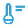
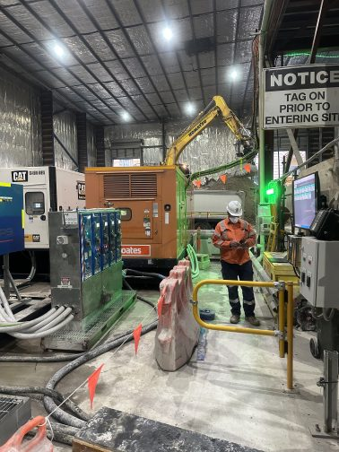

Environmental intelligence
Understanding Changing Environmental Conditions Across The Operation
Environmental conditions can change quickly and directly influence workforce safety, productivity and operational performance.
The challenge is not simply monitoring environmental data.
The challenge is understanding how environmental conditions affect people, equipment, work areas and operational decisions.
iottag helps organisations create a live understanding of environmental conditions and their impact across the operation.
Environmental visibility
Environmental visibility helps teams understand changing site conditions in real time.
The platform can support visibility across:
Air quality
Gas concentrations

Temperature
Humidity
Dust
Particulates
Weather conditions
Ventilation status
This provides operational teams with greater awareness of changing conditions.
This provides operational teams with greater awareness of changing conditions.
Air quality & gas monitoring
Air quality and gas conditions are critical in underground, industrial and infrastructure environments.
The platform can support monitoring of:
This supports safer operations and better environmental awareness.
Variable control ventilation
Ventilation performance can directly influence workforce exposure and operational productivity.
The platform helps organisations understand:
Variable control ventilation can help organisations respond dynamically to changing occupancy, environmental conditions and operational requirements.
Heat stress & workforce exposure
Environmental exposure can affect workforce safety and performance.
The platform can support visibility into:
This helps teams understand where environmental conditions may require attention.

Wind direction, velocity & weather station data
Weather and wind conditions can influence construction, mining, infrastructure and critical operations.
The platform can integrate weather station data to monitor:
This supports better planning, operational awareness and risk management.
Environmental conditions
in operational context
Environmental data becomes more valuable when understood in context.
By connecting workforce activity into the Operational Digital Twin, organisations gain a clearer understanding of how people, equipment, vehicles and conditions interact across the site.
Environmental conditions in operational context
Environmental data becomes more valuable when understood in context.
For example:
By connecting environmental monitoring into the Operational Digital Twin,
organisations can understand not only what has changed, but who and what may be affected.
Ai-powered environmental insight
The platform can help translate environmental information into clear operational summaries.
For example:
Environmental Exposure Alert
Ventilation performance has reduced within Zone 3
Airflow has decreased and gas concentrations are increasing downstream
Current workforce deployment places 14 personnel within affected work areas
Conditions may influence workforce exposure and operational productivity if trends continue
Recommended Action:
Review ventilation systems and workforce allocation within impacted zones
By connecting environmental monitoring into the Operational Digital Twin,
organisations can understand not only what has changed, but who and what may be affected.
Part of the operational intelligence ecosystem
Environmental conditions influence:
The platform helps organisations monitor:

Workforce safety

Fatal risk exposure

Production performance

Equipment operations

Emergency response

Operational planning
By connecting environmental monitoring into the Operational Digital Twin,
organisations gain a clearer understanding of how changing conditions affect the entire operation.

Improve environmental awareness
and operational decision-making
Understand how changing environmental conditions influence safety, exposure and operational performance.